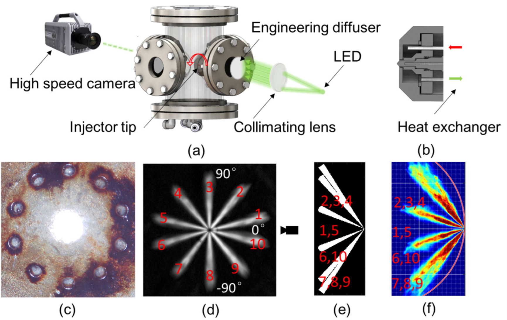
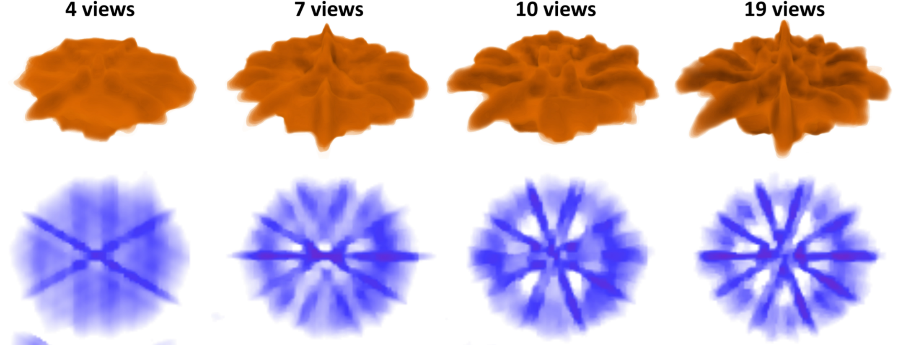
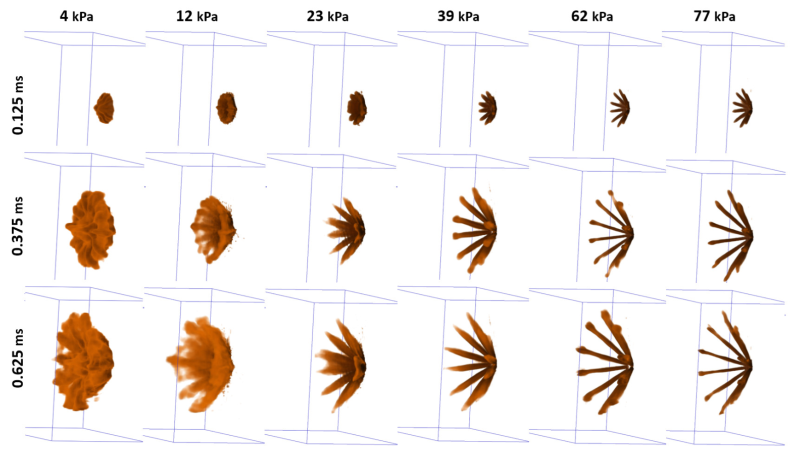
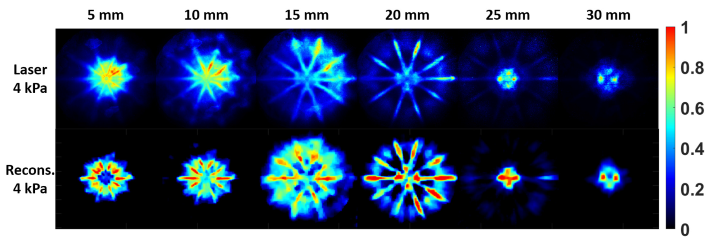

Study of spray structure from non-flash to flash boiling conditions with space-time tomography
Jianguo Du*,
Guangming Zang*,
Balaji Mohan,
Ramzi Idoughi,
Jaeheon Sim,
Tiegang Fang,
Peter Wonka,
Wolfgang Heidrich,
William L Roberts
(*Authors contributed equally to this work.)
Proceedings of the Combustion Institute, 2020

1: (a) Optical alignment; (b) injector fixture with built-in
thermal bath channel; (c) injector nozzle hole orientation; (d) Miescattering
from front of spray;(e,f) sketch and DBI image showing the
overlap of plumes along the line of sight, respectively.
Abstract
Flash boiling and plume interaction are common phenomena occurring in gasoline direct injection (GDI) spray at throttling and low load engine conditions.
Combined with optical engines and low-pressure vessels, several optical techniques, such as backlight imaging, Mie-scattering, and laser sheet imaging have been employed to study the flash boiling morphology. However, in the 2D images resulting from these techniques (projection views or planar imaging),
the 3D information is lost. Those methods are then incapable of providing satisfactory information, especially for the study of multi-plume interaction in flash boiling spray, since multi-plume interaction is not a 2D event.
This paper reports the implementation of a 4D tomographic reconstruction method from multi-view diffused back illumination (DBI) images, used for the first time in spray characterization. This cost-effective and time-saving method with a simple experimental setup clarifies the 3D spray structure and fuel trajectory change from non-flashing conditions to flare flash conditions, and quantifies the 3D characteristics of individual plumes in non-flash conditions.
Main results
Parametric study of view number’s effect on reconstruction quality: top row shows the reconstructed volume; bottom row shows the slice
at 20 mm downstream of injector nozzle

3D reconstruction results of spray at various instants of time.

Laser sheet images and reconstructed volume slices at different heights from injector tip (4 kPa ambient gas pressure, time aSOI = 0.4
ms).

Paper and video
Paper [main_paper.pdf ~2.5 MB]
Citation
@article{du2020study,
title={Study of spray structure from non-flash to flash boiling conditions with space-time tomography},
author={Du, Jianguo and Zang, Guangming and Mohan, Balaji and Idoughi, Ramzi and Sim, Jaeheon and Fang, Tiegang and Wonka, Peter and Heidrich, Wolfgang and Roberts, William L},
journal={Proceedings of the Combustion Institute},
year={2020},
publisher={Elsevier}
}